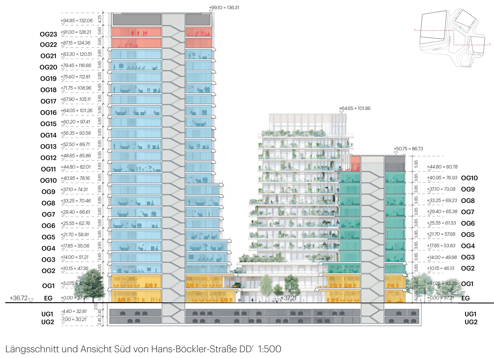

CAN ARCHITECTURE FACILITATE A FEELING OF TOGETHERNESS?
// NEW HEART DÜSSELDORF //
MVRDV - GERMAN STUDIO
While confidently asserting its position as a landmark in the Düsseldorf skyline, the new building complex is stepping out at the bottom, creating private and public terraces, and opening up to all sides on the ground floor. It seeks a dialogue with the surrounding buildings, not only visually, but also through means of transportation or leisure. The central square, the new heart, is to be claimed and defined by it users, the people of the district. All parts of the buildings groundfloor open towards this central square, which offers a wide range of activities.


